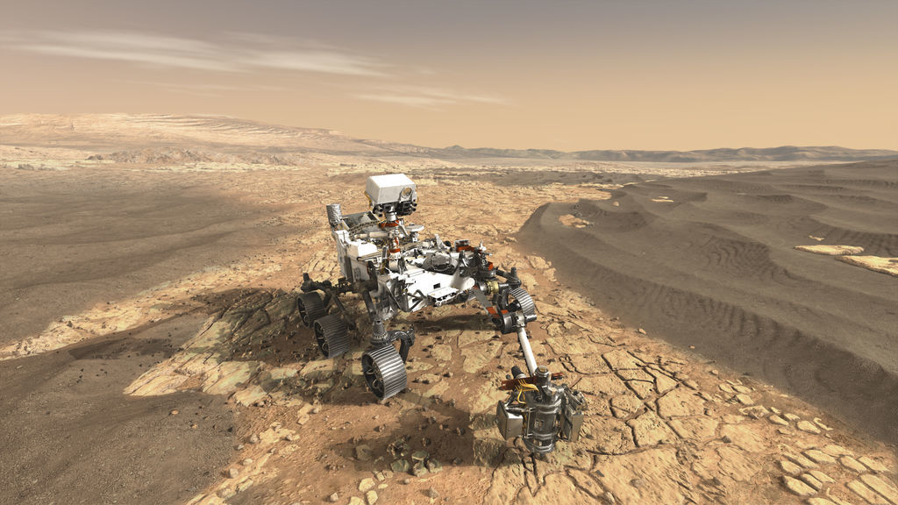

Lastest News | Cum sociis natoque penatibus et magnis dis parturient montes, nascetur ridiculus mus…
Mars 2020 Mission

The Mars 2020 rover mission is part of NASA's Mars Exploration Program, a long-term effort of robotic exploration of the Red Planet. The Mars 2020 mission addresses high-priority science goals for Mars exploration, including key questions about the potential for life on Mars. The mission takes the next step by not only seeking signs of habitable conditions on Mars in the ancient past, but also searching for signs of past microbial life itself. The Mars 2020 rover introduces a drill that can collect core samples of the most promising rocks and soils and set them aside in a "cache" on the surface of Mars.
A future mission could potentially return these samples to Earth. That would help scientists study the samples in laboratories with special room-sized equipment that would be too large to take to Mars. The mission also provides opportunities to gather knowledge and demonstrate technologies that address the challenges of future human expeditions to Mars. These include testing a method for producing oxygen from the Martian atmosphere, identifying other resources (such as subsurface water), improving landing techniques, and characterizing weather, dust, and other potential environmental conditions that could affect future astronauts living and working on Mars.
The mission is timed for a launch opportunity between July 17 - Aug. 5, 2020 when Earth and Mars are in good positions relative to each other for landing on Mars. That is, it takes less power to travel to Mars at this time, compared to other times when Earth and Mars are in different positions in their orbits. To keep mission costs and risks as low as possible, the Mars 2020 design is based on NASA's successful Mars Science Laboratory mission architecture, including its Curiosity rover and proven landing system.
InSight (Discovery Mission)

InSight (Interior Exploration using Seismic Investigations, Geodesy and Heat Transport) is a NASA Discovery Program mission that will place a single geophysical lander on Mars to study its deep interior. But InSight is more than a Mars mission - it is a terrestrial planet explorer that will address one of the most fundamental issues of planetary and solar system science - understanding the processes that shaped the rocky planets of the inner solar system (including Earth) more than four billion years ago.
By using sophisticated geophysical instruments, InSight will delve deep beneath the surface of Mars, detecting the fingerprints of the processes of terrestrial planet formation, as well as measuring the planet's "vital signs": Its "pulse" (seismology), "temperature" (heat flow probe), and "reflexes" (precision tracking).
InSight seeks to answer one of science's most fundamental questions: How did the terrestrial planets form?
Updated: January 2019